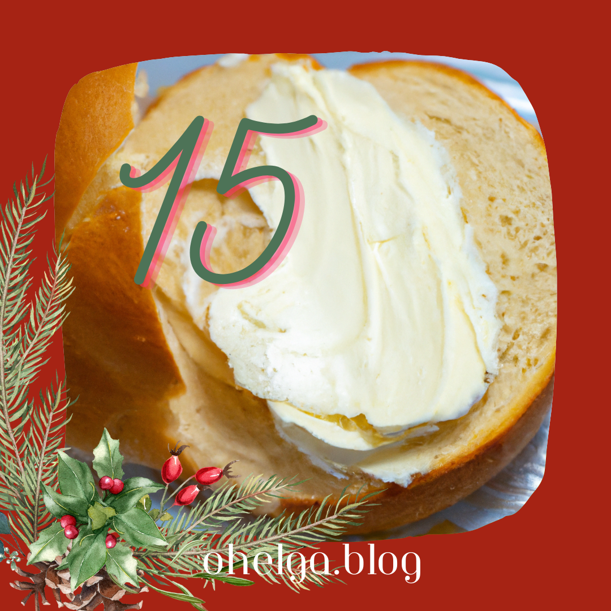

Smöret puttrar på i kastrullen i dagens lucka. Otetaan viikinki, otetaan kymmenentuhatta punaista ruusua, otetaan hali-rakkauslauluja, ja sekoitetaan niitä päivän versioksi. I denna lucka hittar vi Christer Sjögren: O helga natt.
Smöret puttrar på i kastrullen i dagens lucka. Otetaan viikinki, otetaan kymmenentuhatta punaista ruusua, otetaan hali-rakkauslauluja, ja sekoitetaan niitä päivän versioksi. I denna lucka hittar vi Christer Sjögren: O helga natt.
Kommentit / Kommentarer (2)
<p>Ja, detta är ännu en riktigt bra version. en sjua är för snålt så det kan inte bli annat än en 8</p>
<p>Thaanks great post</p>